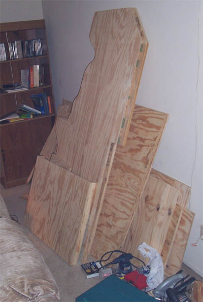
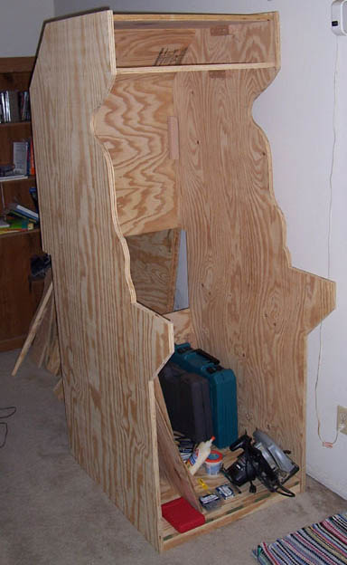
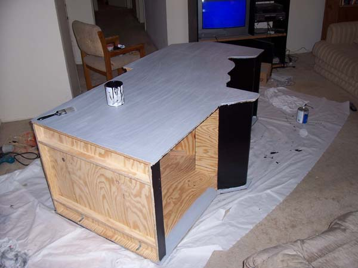
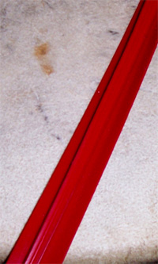
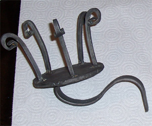
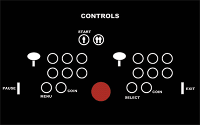

The Cabinet
I hadn't done any woodwork since junior high so building the cabinet was the most intimidating part of the project for me. There was lots of help though. You can find many arcade cabinet designs online, and I used these to come up with ideas for my blueprints . I bought some wood from Home Depot (four 4x8 sheets of plywood for $120) and cut all the pieces out in an afternoon. I got help from a friend who owned a couple of power saws.

The most time-consuming step was piecing all the parts together. Everything was held together with screws and wooden supports. This tooke a few weekends.

When it was finally assembled I painted it black. My roommates were good enough to let me paint indoors, but that's not necessarily the best idea since this requires a lot of sanding. Two cans of latex paint and primer cost about $25.

I also put a red stripe around the edges using T-molding. I had to borrow a router and buy a special router bit to put a groove in all the edges so that the T-molding would snap in.

I took a blacksmithing class in the Spring while I was building the cabinet, and I took some time to hammer out a cupholder. I don't recommend this for everyone.

Finally I put some graphics on the machine. You've already seen my marquee at the top of the screen. I backlit it with a regular 60 Watt lightbulb. I also put some yellow stars on the body, and put a little guide on the front for how to use the controls. Both were made in PowerPoint and Kinkos printed them for about $25.

|